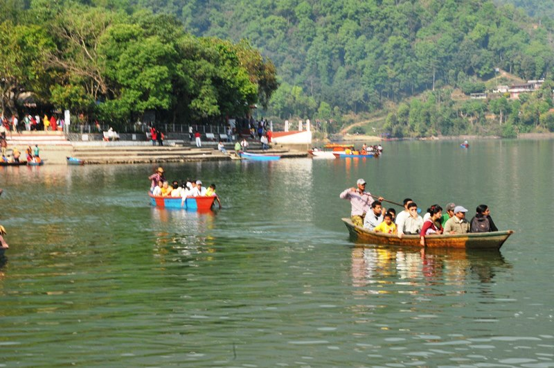
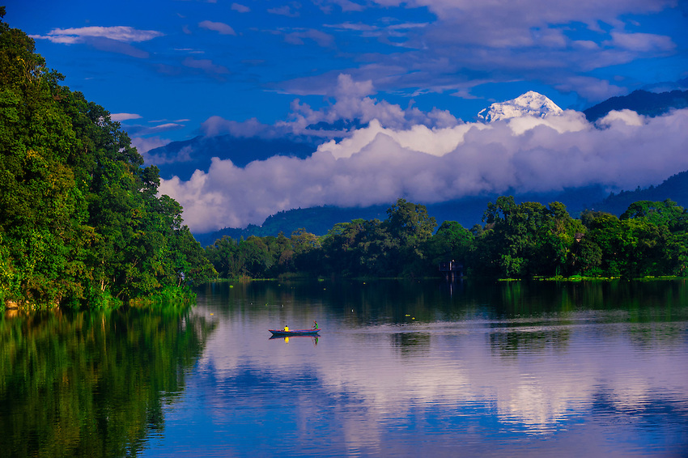
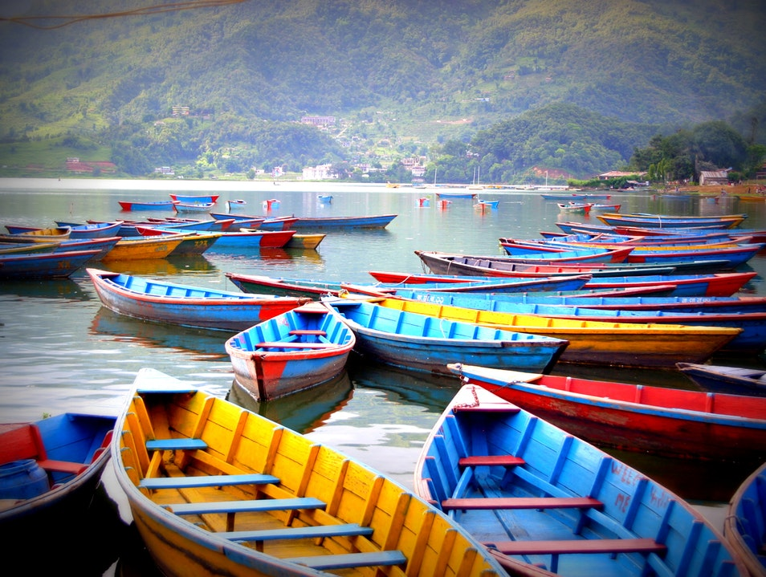
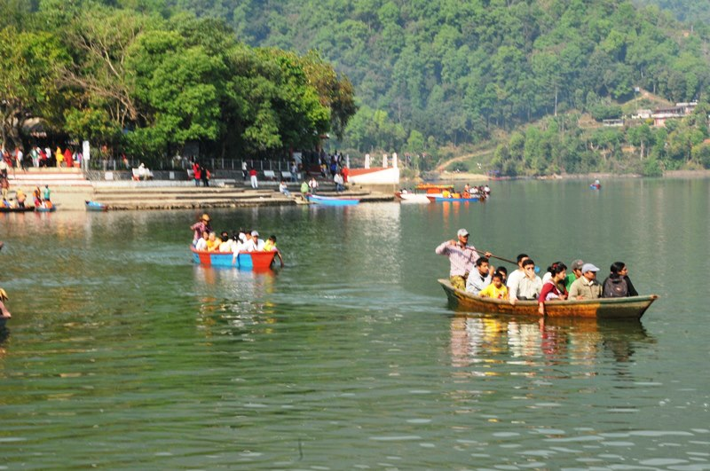
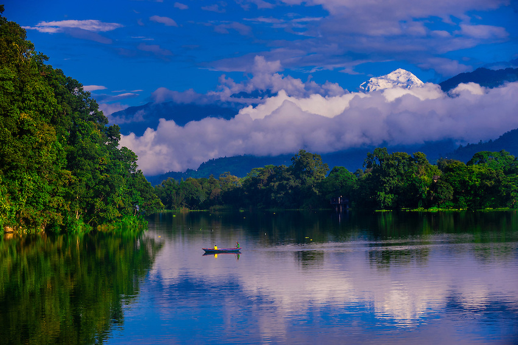
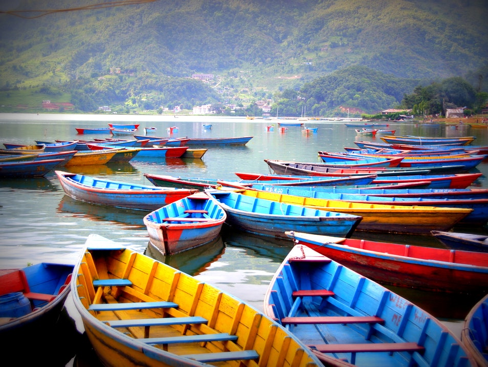
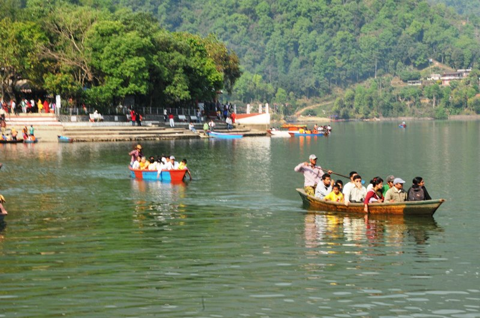
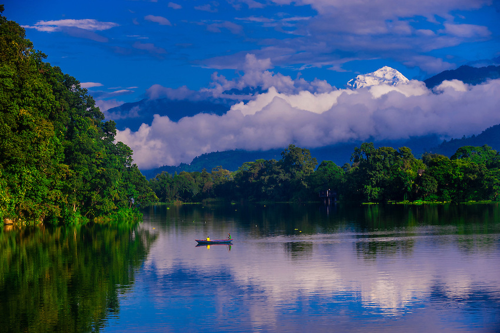
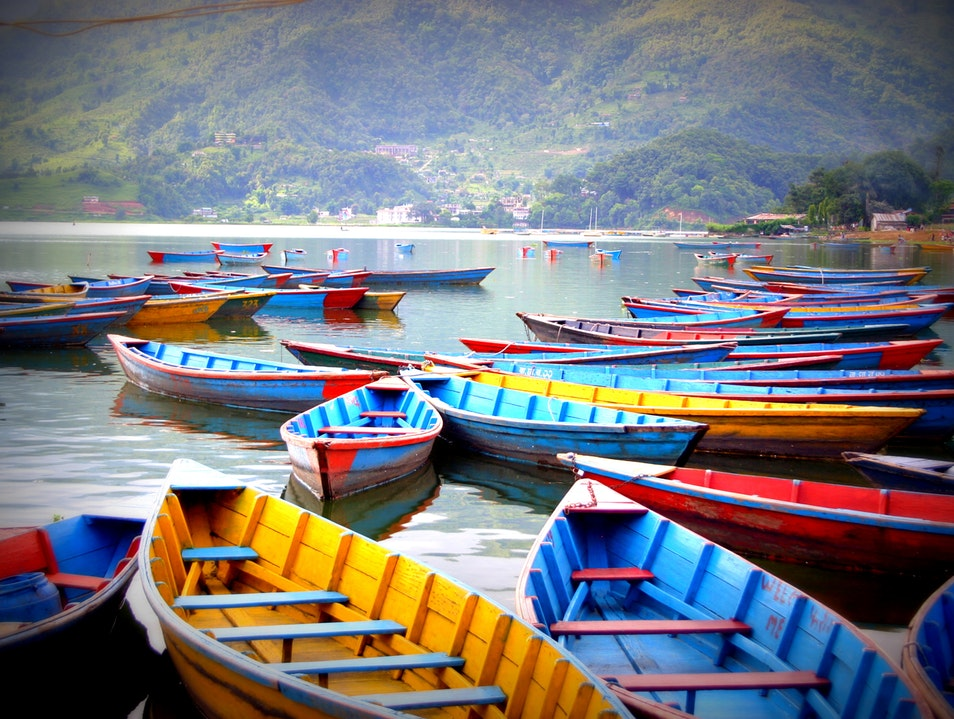
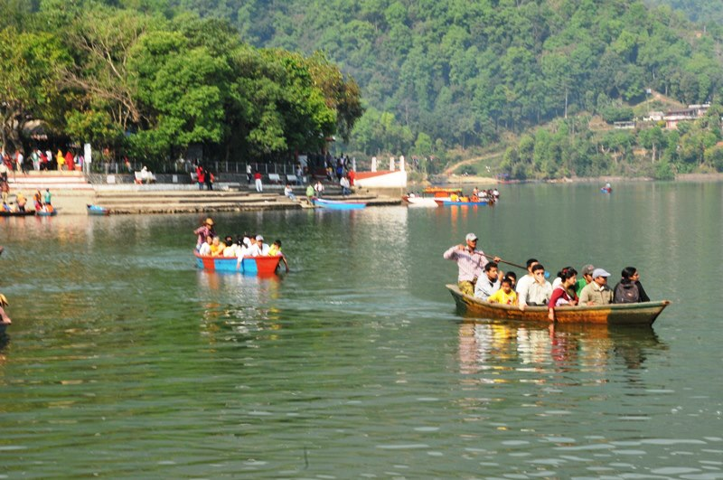
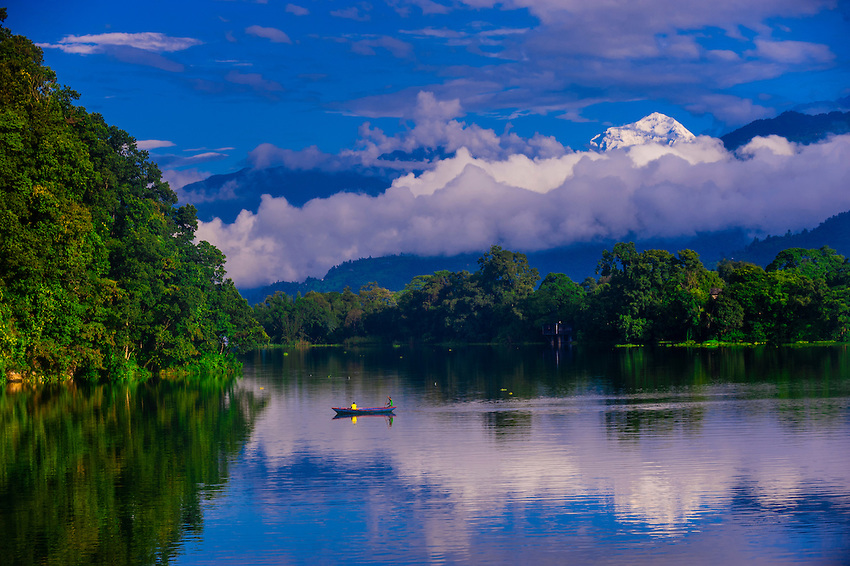
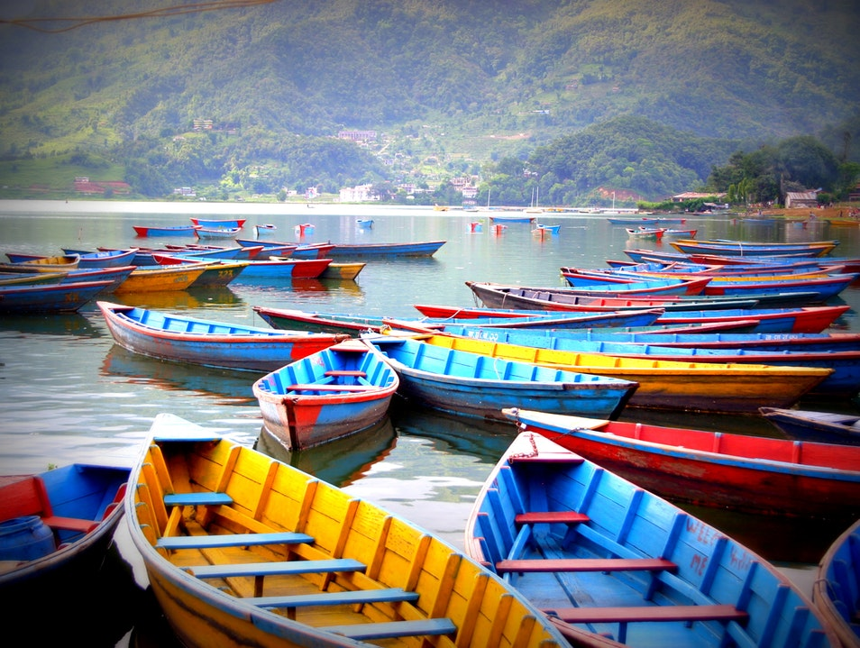
phewa lake はポカラの一番中心にあり 様々な国からお客様が来られます。 ボートをのったりして 楽しむことができます。 phewa lakeの間に有名なお寺があります。 なおに乗って全部レクを遊んだりするのもとても楽しいです。 なおに乗ってお寺も回ることができますお祈りをしてプザをしたりします。phewa lakeのまわりに たくさんレストランやホテルもありますので景色を見ながらゆっくりできます。 夜も景色もとてもきれいですからぜひ夜も遊んだほうがいいです。 お店とかもたくさんありますので買い物できます。手つくりの靴下、帽子、セーター、などがとても有名 なのでたくさん店があります。冬用の服が人気だといわれてます。
 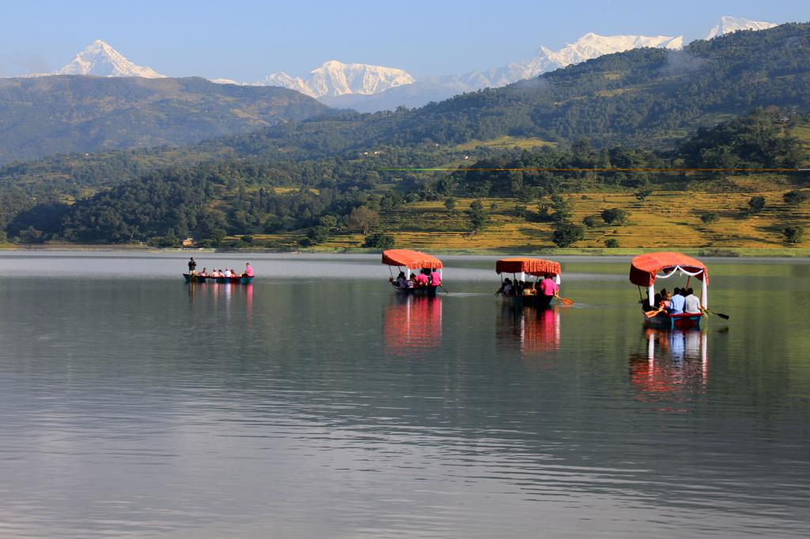
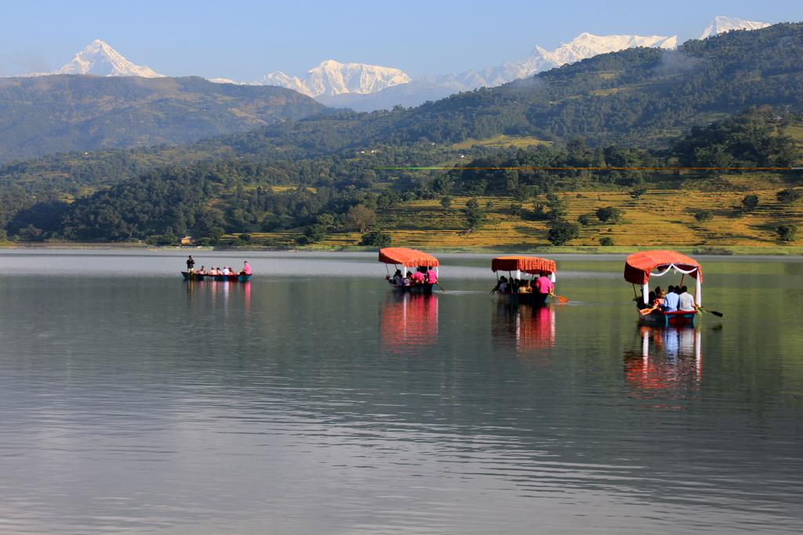begnas lake はポカラ町から タクシーで30分くらいかかります。とてもきれいみずがあります。皆様だいたいグルプで行って パーティーをして楽しんで帰ります。begnas lake の周りには大きい森がありますそれにとても きれい村もあります。レストランとかホテルもたくさんあってとても便利です。ﾀｸｼとバスも乗ったり 行くことができます周りの緑景色を見ながらネーパルの古いや新しいスタイルの家を見ながらbegnas lake まで いけます。